|
|
| sea cucumbers text index | photo index |
| Phylum Echinodermata > Class Holothuroidea |
| Sea
cucumbers Class Holothuroidea updated Apr 2020
Where seen? Sea cucumbers are commonly seen on many of our shores. On sandy patches large sea cucumbers may move about on the surface, while smaller ones burrow. In coral rubble areas, they may hide under or cling to the rubble, seaweeds or other animals such as sponges and ascidians. On the rocky shore, some hide under the rocks. Many lie buried in the sand, only their feeding tentacles emerging above ground. What are sea cucumbers? Sea cucumbers are animals and NOT vegetables as their common name suggests. Often mistaken for worms, sea cucumbers are related to sea stars and belong to Phylum Echinodermata. Class Holothuroidea has about 1,200 known species. Some are colourful and easily seen, others are well camouflaged or hidden under stones or in the sand. Sea cucumbers can be round as balls, long and worm-like, or even U-shaped. They are found almost everywhere from shallow areas to the deep sea, from tropical to the Arctic and the Antarctic. Wormy Echinoderms: Sea cucumbers look quite different from their echinoderm cousins such as sea stars. Sea cucumbers don't have arms, obvious spines or a hard skeleton. They are instead soft and worm-like. But like other echinoderms, they are symmetrical along five axes. Instead of lying on their mouths like sea stars, brittle stars, sand dollars and sea urchins, sea cucumbers lie on their sides with their mouths on one end and backsides on the other. |
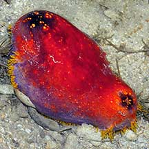 The striking colours of the Sea apple warns of its toxic nature. Pulau Sekudu, Dec 03 |
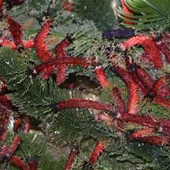 These tiny red sea cucumbers are often mistaken for worms. Chek Jawa, Aug 02 |
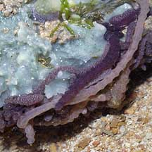 Often mistaken for worms, Sponge synaptid sea cucumbers are commonly seen on a sponge. Pulau Sekudu, Jul 03 |
| Sometimes mistaken for worms or
other sausage-shaped animals. Here's more on how to tell apart worm-like
animals and sausage-shaped
animals. Sometimes, the feeding tentacles of a buried or hidden
sea cucumber is mistaken for a sea anemone or other feathery animals.
Here's more on how to tell apart feathery
animals. Feeding with their feet! Most sea cucumbers have tube feet. The tube feet around the mouth are modified into branched or feathery feeding tentacles. There can be 10-30 such tentacles, which can be completely retracted into the body. Most have tiny tube feet which are used to cling to surfaces and things. Only a few use their tube feet to creep on. In some, tube feet emerge in rows concentrated on the flattened lower half that faces the surface (called the sole). In others, the tube feet may be scattered all over their body. Sea cucumbers that lack tube feet include synaptid sea cucumbers and those sea cucumbers that burrow. Morphing sea cucumbers: Instead of a hard skeleton, the bodies of sea cucumbers are mostly made up of mutable connective tissue that they can rapidly change from soft to rock hard. This tissue plus well-developed layers of muscles (around the body and along its length) helps them to move about; flow into narrow places to hide; or disuade predators from taking a bite out of them. They also have ossicles (hard pieces of calcium carbonate), but these are microscopic and widely distributed in their mutable connective tissue. In some sea cucumbers, their ossicles can give their skin a stiff and rough texture. Sea cucumber ossicles take on a wondrous variety of delicate shapes and are used to identify sea cucumber species! |
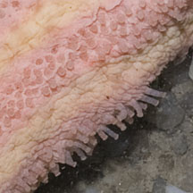 Three rows of tube feet on the underside of a Pink warty sea cucumber. Changi, Jul 12 |
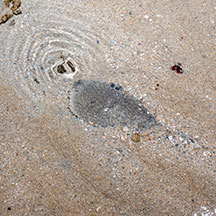 Half buried Garlic Bread sea cucumber 'breathing' through its backside. Tanah Merah, Jun 12 |
 Ossicles of the Remarkable sea cucumber Photos shared Robin Ngiam Wen Jiang, see also his blog. |
| Breathing through their backsides! A unique feature of some sea cucumbers is an internal breathing system
of branching tubes along the length of their bodies. Called respiratory
trees, most large sea cucumbers have a pair of these, each connected
to the opening on the backside. To breathe, the sea cucumber pumps
water in through its backside and up through the respiratory trees.
The water is then flushed out through the backside again. With this
constant flow of water, some tiny creatures find the backside of a
sea cucumber a well aerated but also safe place to be! These include pea crabs and
the Pearlfish. These cannot be seen unless the animal is killed and dissected,
so please do not prod the sea cucumber to try to see these crabs. Small or thin-walled sea cucumbers, however, simply
breathe through their skins. Dust Busters of the Sea: Most sea cucumbers eat detritus, collecting this in their sticky, mucus-covered branched or feathery tentacles by sweeping the sea bottom or waving their tentacles in the water. The tentacles are then inserted one by one into the mouth and sucked clean. Some simply shovel sediments into their mouths with their tentacles and process the edible bits, leaving behind them a trail of sausage-like lumps of processed sediments. Some sea cucumbers have been estimated to process 130kg of sediments per year! |
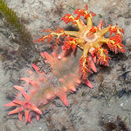 Feeding tentacles of the Thorny sea cucumber. Changi, Dec 03 |
 Feeding tentacles of a buried Ball sea cucumber emerges above the sand. Changi, Jul 07 |
 The backside of the White-rumped sea cucumber is guarded by five 'teeth'. Pulau Hantu, Jul 07 |
| Repulsive vomiting: Being soft
and slow, sea cucumbers protect themselves by hiding or being unpleasant
to deal with. Some have toxins or distasteful substances in their
bodies. To repel and distract predators, some sea cucumbers vomit
their entire digestive system and other internal organs such as the
respiratory tree and even their reproductive organs. Depending on
the species, these can emerge from the front or back end of a sea
cucumber. Some species eject toxic or sticky strings (called Cuvierian
tubules) from their backsides. These immobilise the predator in a
gummy mess or release toxins. The sea cucumber eventually regrows
its innards and arsenal of Cuvierian tubules. Please don't make sea cucumbers expel their intestines. Not all do this. Those that do cannot eat until they re-grow their innards. The guts or other noxious substances may irritate your skin and may hurt you if these get into your eyes or mouth. |
 The Ashy pink cucumber can eject its intestines to deter predators. Beting Bemban Besar, Jun 09 |
 The Brown sea cucumber can also eject its intestines. Cyrene Reef, Dec 09 Photo shared by Loh Kok Sheng on his flickr. |
 Some sea cucumbers are smooth and transparent! Chek Jawa, Sep 03 |
Cucumber babies: Most sea cucumbers
have separate genders and are usually either male or female. Their
reproductive organs are near the front of their body. In most species,
sperm and eggs are released simultaneously for external fertilisation.
Some spawning sea cucumbers raise their front end in a cobra-like
posture when releasing their eggs and sperm. Observations suggest
spawning is synchronised, sometimes more than one species spawning
together.  Sea
cucumbers undergo metamorphosis and their larvae look nothing like
their adults. The form that first hatches from the eggs are bilaterally symmetrical
and free-swimming, drifting with the plankton. They eventually settle
down and develop into tiny sea cucumbers. Sea
cucumbers undergo metamorphosis and their larvae look nothing like
their adults. The form that first hatches from the eggs are bilaterally symmetrical
and free-swimming, drifting with the plankton. They eventually settle
down and develop into tiny sea cucumbers.Role in the habitat: Sea cucumbers dominated the deep sea ecosystem and can make up 90% of the creatures found there. Here, some have very long tube feet to stilt walk in the mud, others have webbed tentacles to briefly swim. Since this ecosystem makes up about 70% of the surface of the earth, sea cucumbers can be considered the dominant organisms on earth! Being so numerous, sea cucumbers are important to the ecosystem. Their larvae are probably important in plankton-based food chains. The constant processing of sediment by countless sea cucumbers possibly plays a role in nutrient recycling. |
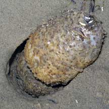 The Ball sea cucumber is sometimes found in large numbers buried just beneath the sand. Chek Jawa, Mar 05 |
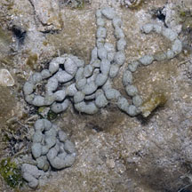 Poop produced by a sea cucumber. Pulau Semakau, Aug 11 |
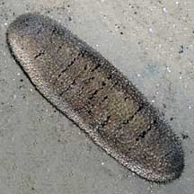 The Garlic Bread sea cucumber is among those harvested for food. But must be properly prepared before they are safe for humans to eat. Chek Jawa, Jul 08 |
| Human uses: Some large sea cucumbers
are considered delicacies and harvested for food. The harmless Garlic
bread sea cucumber is among those species
of sea cucumbers that are collected as a Chinese delicacy. They are
gutted and dried for sale as 'trepang' or 'beche-de-mer'. Sandfish,
which can grow up to 40cm and weigh 1.5kg, are the most widely collected
and among the more valuable sources of beche-de-mer. Tests indicate these sea cucumbers contain toxins. They must be properly prepared before they are safe to eat. Others may be collected for the live aquarium trade. Scientists are also studying the toxins of sea cucumbers for possible medical and other applications. Status and threats: Collection of the garlic bread sea cucumber has been a traditional activity for centuries in many coastal peoples in many parts of the world ranging from Madagascar to the Philippines. However, the recent high market price of this delicacy has resulted in increased collection in last 20 years. Some edible sea cucumbers are globally threatened by over-collection. In some areas, such sea cucumbers have become scarce. In others, specimens collected are smaller and have to be harvested from deeper waters. Efforts to culture these edible sea cucumbers have only just started. Many of our sea cucumbers are on the list of threatened animals in Singapore. In Singapore, the main threat is habitat loss due to reclamation or human activities along the coast that pollute the water. Trampling by careless visitors and overharvesting can also have an impact on local populations. |
| Class
Holothuroidea recorded for Singapore From Ong J. Y. & H. P. S. Wong. Sea cucumbers (Echinodermata: Holothuroidea) from the Johor Straits, Singapore and J. Y. Ong, I. Wirawati & H. P. S. Wong. 29 June 2016. Sea cucumbers (Echinodermata: Holothuroidea) collected from the Singapore Strait. in red are those listed among the threatened animals of Singapore from Davison, G.W. H. and P. K. L. Ng and Ho Hua Chew, 2008. The Singapore Red Data Book: Threatened plants and animals of Singapore. ^from WORMS +Other additions (Singapore Biodiversity Record, The Biodiversity of Singapore, etc)
|
| Unidentified sea cucumbers seen on Singapore shores |
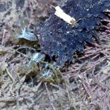 |
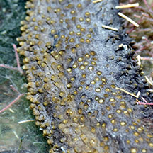 |
Links
|